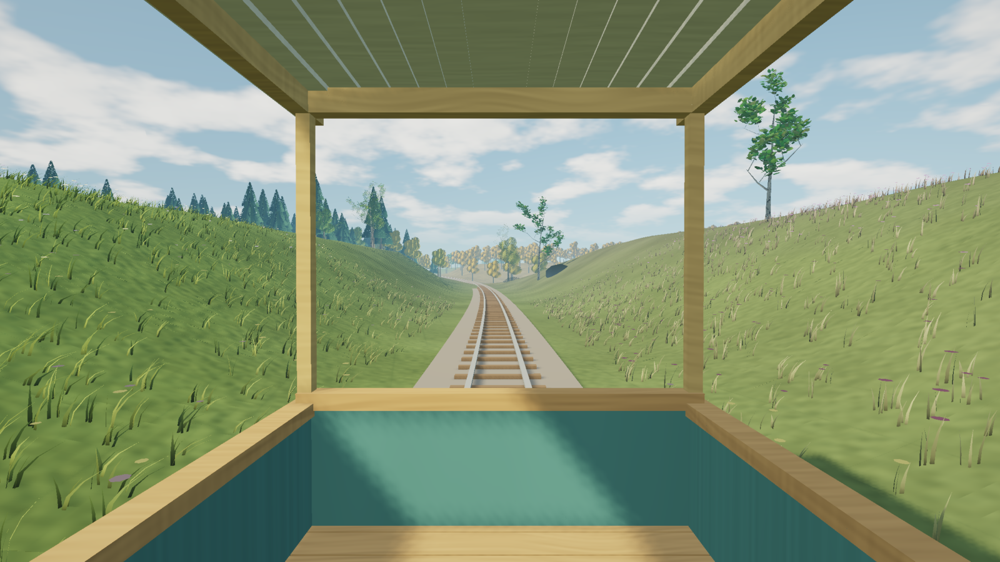
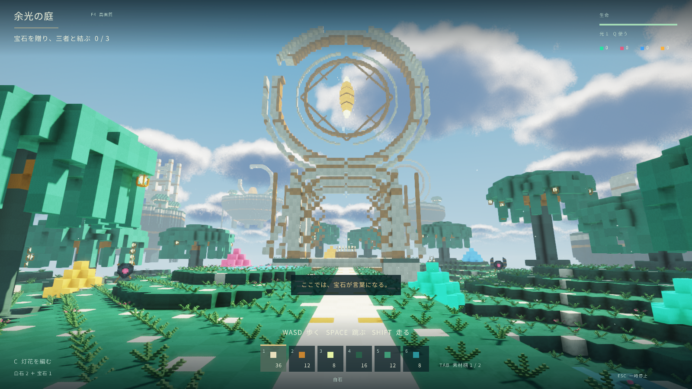

Cのライブラリなしで、どうやって画面を出す？
答えは、Cで書くことと、C ABIで呼ぶことを区別すること。
PURE FUNCTIONAL × NATIVE GAME IO
Haskellで、ゲームの土台から。
GCのある純粋関数型言語で、なぜ本当に動いてしまうのか？
Vulkanで3Dを描き、WASAPIで音を鳴らし、Win32で入力を受け取る。シェーダーの生成も、画像や音声のデコードも、ゲームを支えるコードはHaskellで実装しています。
raylib・SDLなどのゲーム基盤や、手書きのC/C++/Rust製中継コードは使いません。代わりに、HaskellからWindowsとGPUのネイティブAPIを直接呼び出します。

01 / THE IMPOSSIBLE QUESTION
そう。だからこそ、このライブラリは少し奇妙に見えます。
純粋関数型言語で、ポインタを操作できるのか。GCが走ってもGPUメモリは壊れないのか。音声を途切れずに届けられるのか。
この3つの疑問を解くと、「Haskellでは無理そう」が「なるほど、こうすればいいのか」に変わります。
答えは、Cで書くことと、C ABIで呼ぶことを区別すること。
答えは、GCが管理する領域と、明示的に管理する領域を分けること。
答えの一つは、音声に独立したプロセスと時計を与えること。
02 / THE CENTRAL IDEA
純粋な記述と、実際の資源操作を分ける。境界を越えるところだけをHaskellのIOとFFIで扱う。これが全体を貫く設計です。
ゲームの状態更新・シェーダー式・入力イベント・描画計画
ポインタ・バッファ・OSスレッド・資源の寿命・GPU同期
ここから先はWindows・Vulkanローダー・ドライバーの実装。Haskell Game IOは、手書きのCラッパーを挟まずGHC生成のFFIスタブとRTSを通じて接続します。
03 / HOW IT WORKS
魔法のような最適化が一つあるわけではありません。それぞれの難問に、Haskellで直接答えを実装しています。
Windows関数をforeign importで宣言する。VulkanはDLLから関数アドレスを取り、WASAPIはCOMの関数表から呼ぶ。Cの中継実装は要りません。
foreign import ccall safe "ShowWindow" showWindow
:: Handle -> Int32 -> IO WinBoolHaskellの値はGCで扱い、PCMは移動しないpinnedメモリへ。GPUバッファはVulkanで明示的に確保し、GPUの処理完了を確認して解放します。
別のGHCプロセスにWASAPIの出力とミキサーを持たせ、ゲーム側とはパイプで通信。ゲーム本体のGCが、音声側の実行を直接停止させない構成です。
GADTで頂点・フラグメント段階と値の形を区別し、Haskellの式をSPIR-Vへ変換。CPUでも式を評価し、GPUの実際の画素と比較できます。
data Expr local (stage :: ShaderStage) value04 / NOT JUST A DEMO
最小サンプルだけの成果ではありません。既存のゲームのWindowsネイティブ経路を移植し、描画・音声・入力・保存動作を確認しています。

11の景色、音楽、旅の保存・再開。車窓のJourneyを含む通常の操作を移植版で確認。
60Hzの進行と日本語HUD。移動、視点操作、保存と終了までWindowsで確認。
20Hzの進行、フォーカス喪失時の停止。既存の保存データを読み、再保存できることを確認。
05 / WHAT WAS MEASURED
フレーム間隔のp95。101フレーム×3回、RTX 3050 Laptop GPU上で測定。
ゲーム側で100回のmajor GC。別プロセスの音声側で10ms区間400個を連続取得。
純粋な性質、ミキサー、GPU資源寿命のテストを配布ソースから実行。
いずれも特定の条件での観測です。C製エンジンとの性能同等性や、全デバイスでのハードリアルタイム性を証明する数字ではありません。測定方法と限界を確認する / フレームの実測CSV
06 / TRY IT YOURSELF
窓を開き、Spaceで色を変え、Haskellが生成した短い音を鳴らす。最小の入口を用意しました。
Windows x64、GHCとCabal、対応するVulkan 1.3のローダー・ドライバーが必要です。
git clone --branch v0.1.0.0 https://github.com/M-simplifier/haskell-game-io.git
cd haskell-game-io
cabal build all
cabal test portable-laws audio-mixer graphics-lifetime
cabal run getting-started07 / THE HONEST BOUNDARY
アプリケーション、描画、シェーダー生成、音声処理などをHaskellで書いています。ただし、OSやGPUドライバーまでHaskell製になったわけではありません。
手書きのC/C++/Rust製シム、raylib・SDL・GLFWなどのゲーム用ネイティブラッパー。
GHCのRTSと生成FFIスタブ、Win32・Vulkan・WASAPIのABI、WindowsとGPUドライバー。
対象は現時点でWindows x64とVulkan 1.3です。一般的な複雑な文字組みや任意のHaskell関数のGPU実行は対象外。音声コーデックの一部は公開アルゴリズムや先行実装を参照し、出典を保持しています。